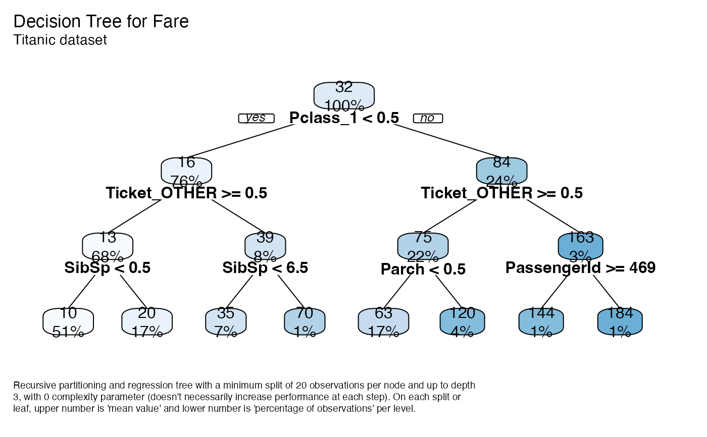
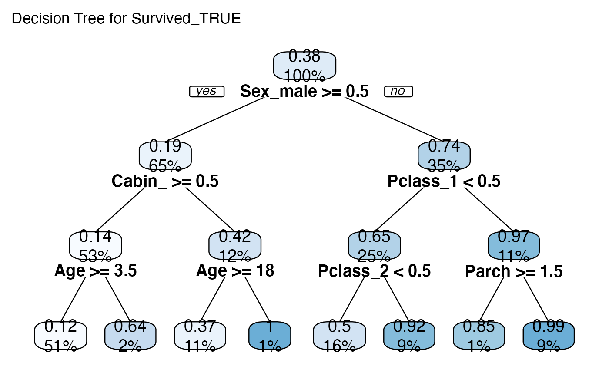
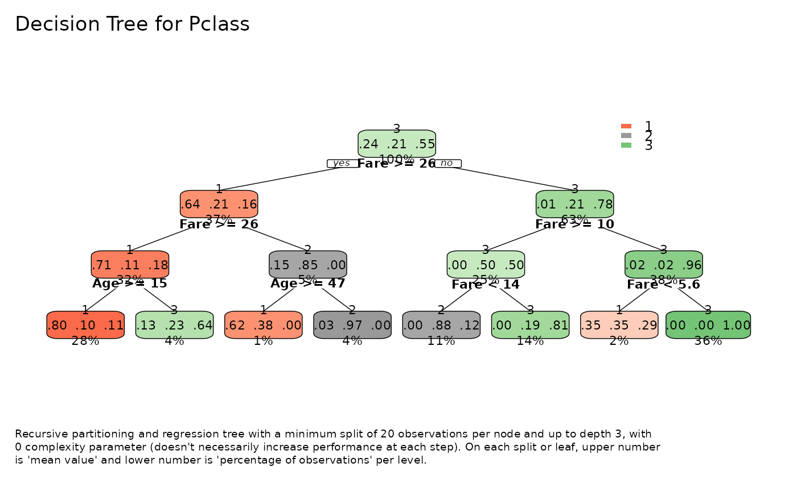

Fit and plot a rpart model for exploratory purposes using
rpart and rpart.plot libraries.
Usage
tree_var(
df,
y,
type = 2,
max = 3,
min = 20,
cp = 0,
ohse = TRUE,
plot = TRUE,
explain = TRUE,
title = NA,
subtitle = NULL,
...
)Arguments
- df
Data frame
- y
Variable or Character. Name of the dependent variable or response.
- type
Type of plot. Possible values:
0 Draw a split label at each split and a node label at each leaf.
1 Label all nodes, not just leaves. Similar to
text.rpart'sall=TRUE.2 Default. Like
1but draw the split labels below the node labels. Similar to the plots in the CART book.3 Draw separate split labels for the left and right directions.
4 Like
3but label all nodes, not just leaves. Similar totext.rpart'sfancy=TRUE. See alsoclip.right.labs.5 Show the split variable name in the interior nodes.
- max
Integer. Maximal depth of the tree.
- min
Integer. The minimum number of observations that must exist in a node in order for a split to be attempted.
- cp
complexity parameter. Any split that does not decrease the overall lack of fit by a factor of
cpis not attempted. For instance, withanovasplitting, this means that the overall R-squared must increase bycpat each step. The main role of this parameter is to save computing time by pruning off splits that are obviously not worthwhile. Essentially,the user informs the program that any split which does not improve the fit bycpwill likely be pruned off by cross-validation, and that hence the program need not pursue it.- ohse
Boolean. Auto generate One Hot Smart Encoding?
- plot
Boolean. Return a plot? If not,
rpartobject.- explain
Boolean. Include a brief explanation on the bottom part of the plot.
- title, subtitle
Character. Title and subtitle to include in plot. Set to
NULLto ignore.- ...
Additional parameters passed to
rpart.plot().
Value
(Invisible) list type 'tree_var' with plot (function), model, predictions, performance metrics, and interpret auxiliary text.
See also
Other Exploratory:
corr_cross(),
corr_var(),
crosstab(),
df_str(),
distr(),
freqs(),
freqs_df(),
freqs_list(),
freqs_plot(),
lasso_vars(),
missingness(),
plot_cats(),
plot_df(),
plot_nums()
Other Visualization:
distr(),
freqs(),
freqs_df(),
freqs_list(),
freqs_plot(),
noPlot(),
plot_chord(),
plot_survey(),
plot_timeline()
Examples
data(dft)
# Regression Tree
tree <- tree_var(dft, Fare, subtitle = "Titanic dataset")
#> >>> One Hot Encoding applied to 6 variables: 'Pclass', 'Ticket', 'Cabin', 'Embarked', 'Survived', 'Sex'
tree$plot() # tree plot
#> Maybe you meant one of these:
#> 'C059-BdIta', 'C059-Bold', 'C059-Italic', 'C059-Roman', 'D050000L', 'DejaVuMathTeXGyre', 'DejaVuSans', 'DejaVuSans-Bold', 'DejaVuSans-BoldOblique', 'DejaVuSans-ExtraLight', 'DejaVuSans-Oblique', 'DejaVuSansCondensed', 'DejaVuSansCondensed-Bold', 'DejaVuSansCondensed-BoldOblique', 'DejaVuSansCondensed-Oblique', 'DejaVuSansMono', 'DejaVuSansMono-Bold', 'DejaVuSansMono-BoldOblique', 'DejaVuSansMono-Oblique', 'DejaVuSerif', 'DejaVuSerif-Bold', 'DejaVuSerif-BoldItalic', 'DejaVuSerif-Italic', 'DejaVuSerifCondensed', 'DejaVuSerifCondensed-Bold', 'DejaVuSerifCondensed-BoldItalic', 'DejaVuSerifCondensed-Italic', 'DroidSansFallbackFull', 'Lato-Black', 'Lato-BlackItalic', 'Lato-Bold', 'Lato-BoldItalic', 'Lato-Hairline', 'Lato-HairlineItalic', 'Lato-Heavy', 'Lato-HeavyItalic', 'Lato-Italic', 'Lato-Light', 'Lato-LightItalic', 'Lato-Medium', 'Lato-MediumItalic', 'Lato-Regular', 'Lato-Semibold', 'Lato-SemiboldItalic', 'Lato-Thin', 'Lato-ThinItalic', 'LiberationMono-Bold', 'LiberationMono-BoldItalic', 'LiberationMono-Italic', 'LiberationMono-Regular', 'LiberationSans-Bold', 'LiberationSans-BoldItalic', 'LiberationSans-Italic', 'LiberationSans-Regular', 'LiberationSerif-Bold', 'LiberationSerif-BoldItalic', 'LiberationSerif-Italic', 'LiberationSerif-Regular', 'NimbusMonoPS-Bold', 'NimbusMonoPS-BoldItalic', 'NimbusMonoPS-Italic', 'NimbusMonoPS-Regular', 'NimbusRoman-Bold', 'NimbusRoman-BoldItalic', 'NimbusRoman-Italic', 'NimbusRoman-Regular', 'NimbusSans-Bold', 'NimbusSans-BoldItalic', 'NimbusSans-Italic', 'NimbusSans-Regular', 'NimbusSansNarrow-Bold', 'NimbusSansNarrow-BoldOblique', 'NimbusSansNarrow-Oblique', 'NimbusSansNarrow-Regular', 'NotoColorEmoji', 'NotoMono-Regular', 'NotoSansMono-Bold', 'NotoSansMono-Regular', 'P052-Bold', 'P052-BoldItalic', 'P052-Italic', 'P052-Roman', 'StandardSymbolsPS', 'URWBookman-Demi', 'URWBookman-DemiItalic', 'URWBookman-Light', 'URWBookman-LightItalic', 'URWGothic-Book', 'URWGothic-BookOblique', 'URWGothic-Demi', 'URWGothic-DemiOblique', 'Z003-MediumItalic'

tree$model # rpart model object
#> n= 891
#>
#> node), split, n, deviance, yval
#> * denotes terminal node
#>
#> 1) root 891 2197799.00 32.20421
#> 2) Pclass_1< 0.5 675 107453.20 15.58005
#> 4) Ticket_OTHER>=0.5 602 36951.84 12.77241
#> 8) SibSp< 0.5 454 11332.08 10.27211 *
#> 9) SibSp>=0.5 148 14075.24 20.44226 *
#> 5) Ticket_OTHER< 0.5 73 26621.89 38.73350
#> 10) SibSp< 6.5 66 19269.25 35.46508 *
#> 11) SibSp>=6.5 7 0.00 69.55000 *
#> 3) Pclass_1>=0.5 216 1320849.00 84.15469
#> 6) Ticket_OTHER>=0.5 193 1067421.00 74.74652
#> 12) Parch< 0.5 154 626392.20 63.35249 *
#> 13) Parch>=0.5 39 342089.30 119.73840 *
#> 7) Ticket_OTHER< 0.5 23 92995.43 163.10140
#> 14) PassengerId>=469 12 32097.01 144.27710 *
#> 15) PassengerId< 469 11 52007.28 183.63710 *
tree$performance # metrics
#> $dictionary
#> [1] "RMSE: Root Mean Squared Error"
#> [2] "MAE: Mean Average Error"
#> [3] "MAPE: Mean Absolute Percentage Error"
#> [4] "MSE: Mean Squared Error"
#> [5] "RSQ: R Squared"
#> [6] "RSQA: Adjusted R Squared"
#>
#> $metrics
#> rmse mae mape mse rsq rsqa
#> 1 35.09267 14.68424 0.03144996 1231.495 0.5007 0.5002
#>
# Binary Tree
tree_var(dft, Survived_TRUE, explain = FALSE, cex = 0.8)$plot()
#> >>> One Hot Encoding applied to 6 variables: 'Pclass', 'Ticket', 'Cabin', 'Embarked', 'Survived', 'Sex'
#> Maybe you meant one of these:
#> 'C059-BdIta', 'C059-Bold', 'C059-Italic', 'C059-Roman', 'D050000L', 'DejaVuMathTeXGyre', 'DejaVuSans', 'DejaVuSans-Bold', 'DejaVuSans-BoldOblique', 'DejaVuSans-ExtraLight', 'DejaVuSans-Oblique', 'DejaVuSansCondensed', 'DejaVuSansCondensed-Bold', 'DejaVuSansCondensed-BoldOblique', 'DejaVuSansCondensed-Oblique', 'DejaVuSansMono', 'DejaVuSansMono-Bold', 'DejaVuSansMono-BoldOblique', 'DejaVuSansMono-Oblique', 'DejaVuSerif', 'DejaVuSerif-Bold', 'DejaVuSerif-BoldItalic', 'DejaVuSerif-Italic', 'DejaVuSerifCondensed', 'DejaVuSerifCondensed-Bold', 'DejaVuSerifCondensed-BoldItalic', 'DejaVuSerifCondensed-Italic', 'DroidSansFallbackFull', 'Lato-Black', 'Lato-BlackItalic', 'Lato-Bold', 'Lato-BoldItalic', 'Lato-Hairline', 'Lato-HairlineItalic', 'Lato-Heavy', 'Lato-HeavyItalic', 'Lato-Italic', 'Lato-Light', 'Lato-LightItalic', 'Lato-Medium', 'Lato-MediumItalic', 'Lato-Regular', 'Lato-Semibold', 'Lato-SemiboldItalic', 'Lato-Thin', 'Lato-ThinItalic', 'LiberationMono-Bold', 'LiberationMono-BoldItalic', 'LiberationMono-Italic', 'LiberationMono-Regular', 'LiberationSans-Bold', 'LiberationSans-BoldItalic', 'LiberationSans-Italic', 'LiberationSans-Regular', 'LiberationSerif-Bold', 'LiberationSerif-BoldItalic', 'LiberationSerif-Italic', 'LiberationSerif-Regular', 'NimbusMonoPS-Bold', 'NimbusMonoPS-BoldItalic', 'NimbusMonoPS-Italic', 'NimbusMonoPS-Regular', 'NimbusRoman-Bold', 'NimbusRoman-BoldItalic', 'NimbusRoman-Italic', 'NimbusRoman-Regular', 'NimbusSans-Bold', 'NimbusSans-BoldItalic', 'NimbusSans-Italic', 'NimbusSans-Regular', 'NimbusSansNarrow-Bold', 'NimbusSansNarrow-BoldOblique', 'NimbusSansNarrow-Oblique', 'NimbusSansNarrow-Regular', 'NotoColorEmoji', 'NotoMono-Regular', 'NotoSansMono-Bold', 'NotoSansMono-Regular', 'P052-Bold', 'P052-BoldItalic', 'P052-Italic', 'P052-Roman', 'StandardSymbolsPS', 'URWBookman-Demi', 'URWBookman-DemiItalic', 'URWBookman-Light', 'URWBookman-LightItalic', 'URWGothic-Book', 'URWGothic-BookOblique', 'URWGothic-Demi', 'URWGothic-DemiOblique', 'Z003-MediumItalic'

# Multiclass tree
tree_var(dft[, c("Pclass", "Fare", "Age")], Pclass, ohse = FALSE)$plot()
#> Maybe you meant one of these:
#> 'C059-BdIta', 'C059-Bold', 'C059-Italic', 'C059-Roman', 'D050000L', 'DejaVuMathTeXGyre', 'DejaVuSans', 'DejaVuSans-Bold', 'DejaVuSans-BoldOblique', 'DejaVuSans-ExtraLight', 'DejaVuSans-Oblique', 'DejaVuSansCondensed', 'DejaVuSansCondensed-Bold', 'DejaVuSansCondensed-BoldOblique', 'DejaVuSansCondensed-Oblique', 'DejaVuSansMono', 'DejaVuSansMono-Bold', 'DejaVuSansMono-BoldOblique', 'DejaVuSansMono-Oblique', 'DejaVuSerif', 'DejaVuSerif-Bold', 'DejaVuSerif-BoldItalic', 'DejaVuSerif-Italic', 'DejaVuSerifCondensed', 'DejaVuSerifCondensed-Bold', 'DejaVuSerifCondensed-BoldItalic', 'DejaVuSerifCondensed-Italic', 'DroidSansFallbackFull', 'Lato-Black', 'Lato-BlackItalic', 'Lato-Bold', 'Lato-BoldItalic', 'Lato-Hairline', 'Lato-HairlineItalic', 'Lato-Heavy', 'Lato-HeavyItalic', 'Lato-Italic', 'Lato-Light', 'Lato-LightItalic', 'Lato-Medium', 'Lato-MediumItalic', 'Lato-Regular', 'Lato-Semibold', 'Lato-SemiboldItalic', 'Lato-Thin', 'Lato-ThinItalic', 'LiberationMono-Bold', 'LiberationMono-BoldItalic', 'LiberationMono-Italic', 'LiberationMono-Regular', 'LiberationSans-Bold', 'LiberationSans-BoldItalic', 'LiberationSans-Italic', 'LiberationSans-Regular', 'LiberationSerif-Bold', 'LiberationSerif-BoldItalic', 'LiberationSerif-Italic', 'LiberationSerif-Regular', 'NimbusMonoPS-Bold', 'NimbusMonoPS-BoldItalic', 'NimbusMonoPS-Italic', 'NimbusMonoPS-Regular', 'NimbusRoman-Bold', 'NimbusRoman-BoldItalic', 'NimbusRoman-Italic', 'NimbusRoman-Regular', 'NimbusSans-Bold', 'NimbusSans-BoldItalic', 'NimbusSans-Italic', 'NimbusSans-Regular', 'NimbusSansNarrow-Bold', 'NimbusSansNarrow-BoldOblique', 'NimbusSansNarrow-Oblique', 'NimbusSansNarrow-Regular', 'NotoColorEmoji', 'NotoMono-Regular', 'NotoSansMono-Bold', 'NotoSansMono-Regular', 'P052-Bold', 'P052-BoldItalic', 'P052-Italic', 'P052-Roman', 'StandardSymbolsPS', 'URWBookman-Demi', 'URWBookman-DemiItalic', 'URWBookman-Light', 'URWBookman-LightItalic', 'URWGothic-Book', 'URWGothic-BookOblique', 'URWGothic-Demi', 'URWGothic-DemiOblique', 'Z003-MediumItalic'
